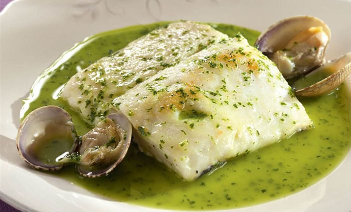

Hiszpania
Hiszpania to jednen z najpiękniejszych krajów w Europie. Myślę, że warto poświęcić chwilę, aby dowiedzieć się trochę o potrawach charakterystycznych dla tego państwa, szczególnie, jeśli mamy zamiar tam pojechać.
Estremadura

Typowe migas z Estremadury przygotowuje się, krusząc chleb, w miarę możliwości z poprzedniego dnia, na małe kawałki. Następnie zwilża się je w naczyniu żaroodpornym, pozostawia na dwie godziny, a następnie miesza się je z zarumienionymi chorizo, papryką, czosnkiem i torreznos (skórkami wieprzowymi).
Galicja
Aby przygotować słynne galicyjskie przegrzebki, należy przygotować sofrito na oliwie z oliwek, z posiekaną cebulą, szynką i pietruszką i wlać do muszli z odrobiną słodkiej papryki i brandy. Wierzchnią część muszli trzeba posypać bułką tartą i pietruszką i piec około piętnaście minut.
Empanada galicyjska, pąkle gęsie (percebes), papryczki z Padrón i gulasz galicyjski (z gotowaną wieprzowiną, kiełbasą chorizo, ciecierzycą i częścią nogi wieprzowej) są innymi przykładami typowych potraw galicyjskich. Na uwagę zasługuje również lacón con grelos y patatas (gotowana szynka wieprzowa z rzepą naciową i ziemniakami).
Kantabria

Jeśli jednym z Twoich celów podróży jest Kantabria, nie powinieneś przegapić okazji, aby spróbować jej bogatej i zróżnicowanej oferty kulinarnej. Jednym z obowiązkowych dań jest cocido montañés (gulasz górski).
Cocido montañés przygotowuje się z fasoli białej, naci rzepy i tzw. compango, czyli marynowanych żeberek, boczku, chorizo i hiszpańskiej kaszanki – morcilla. Jest to potrawa o wysokiej wartości kalorycznej, dlatego często spożywana jest jako jedyne danie.
Ponadto, będąc w Kantabrii, warto spróbować inne typowe produkty rybne takie jak: anchois z Santoña, których proces produkcyjny jest bardzo skrupulatny i rozwijany w sposób rzemieślniczy, zapiekanki z sardeli (bocartes a la cazuela), morszczuka w sosie zielonym, sardynki, małże czy muergos – typowe owoce morza z Kantabrii.
Jak widać, region cieszy się dużą różnorodnością produktów, a jeśli jeszcze znajdziesz miejsce na deser, sobaos pasiegos i quesada to typowe słodkie przysmaki kuchni kantabryjskiej.
 Niemcy
Niemcy Hiszpania
Hiszpania